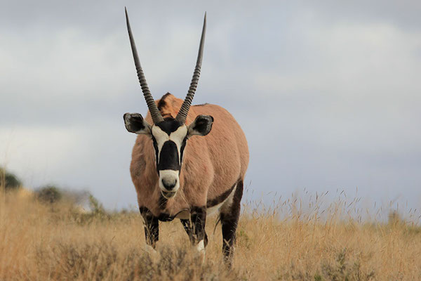

GEMSBOK
The gemsbok or gemsbuck (Oryx gazella) is a large antelope in the Oryx genus. It is native to the arid regions of Southern Africa, such as the Kalahari Desert. Some authorities formerly included the East African oryx as a subspecies. The gemsbok is depicted on the coat of arms of Namibia, where the current population of the species is estimated at 373,000 individuals. The name "gemsbok" in English is derived from Afrikaans gemsbok, which itself is derived from the Dutch name of the male chamois, gemsbok. Although some superficial similarities in appearance (especially in the facial pattern) are noticed, the chamois and the oryx are not closely related.WHERE WILL YOU FIND THEM?
You will find the gemsboks just beyond panda canyon.